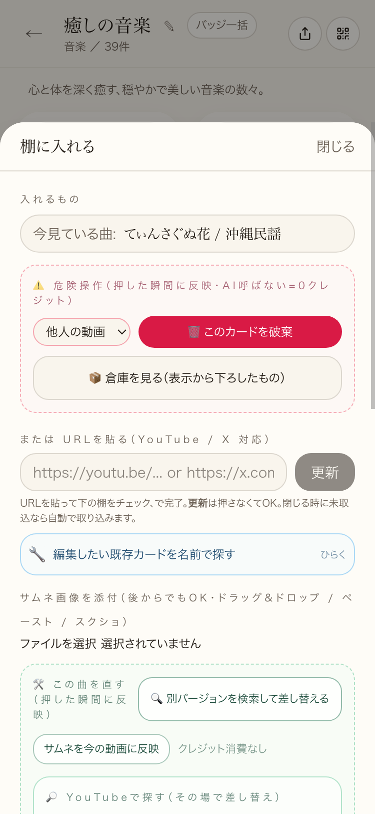
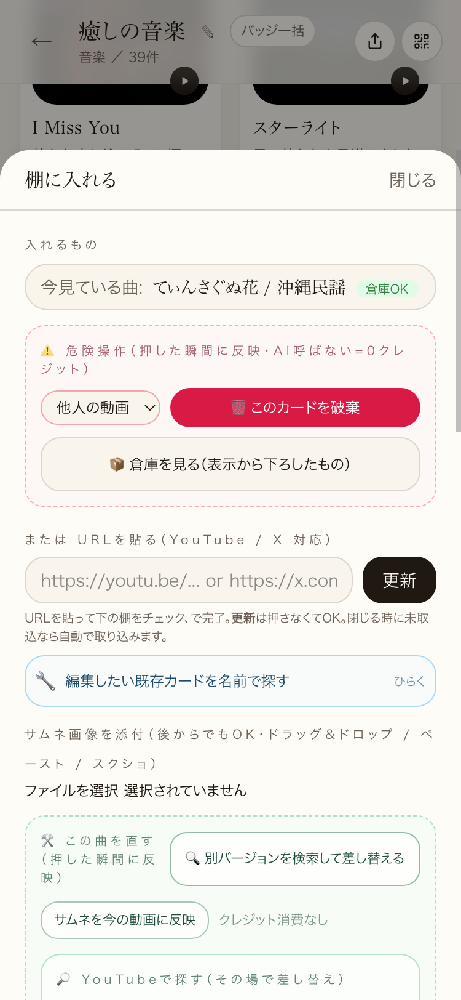
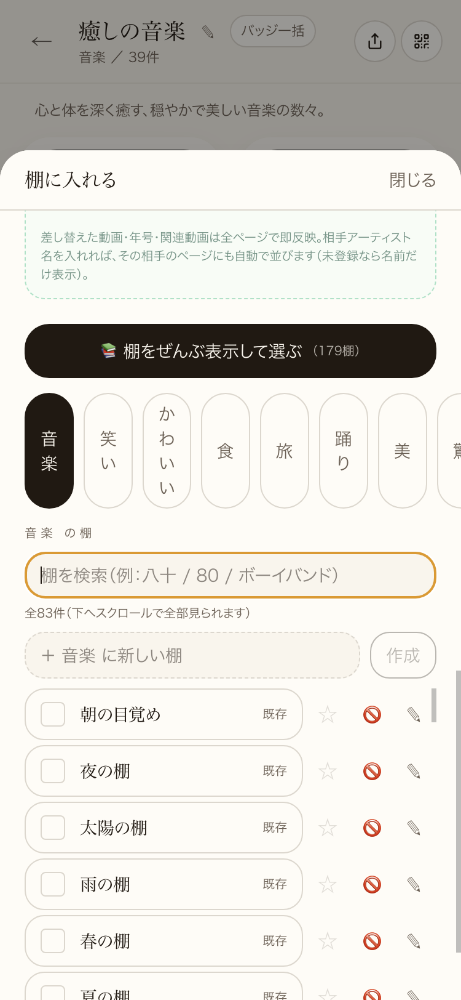
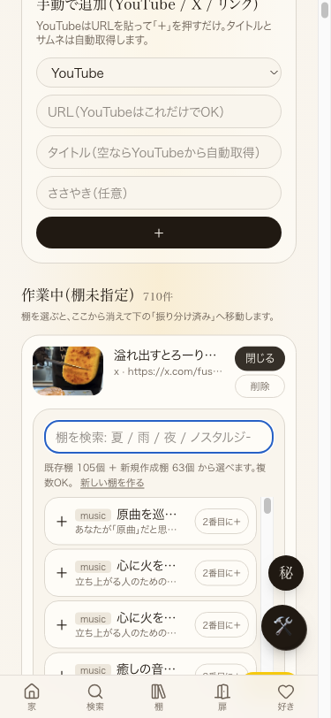
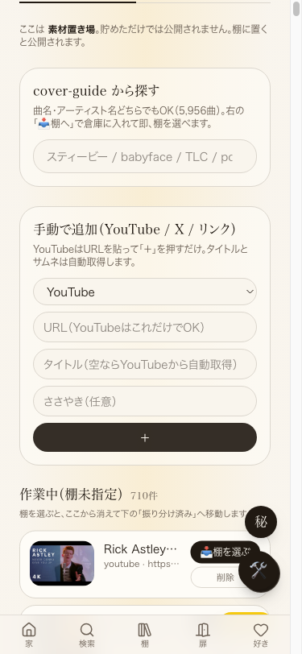

共有資料の一覧 ／ 確認ページ #686 案件#686 スマホで動画追加すると落ちる／棚編集の横ぐらつき固定
#686 案件#686 スマホで動画追加すると落ちる／棚編集の横ぐらつき固定
2026-09-11 06:50追記：本番へ実際にスマホ幅(375px)でアクセスし、10回の実操作で実測（AI検品の指摘に対応）
09-11 06:50時点の実機実測：公開便Chrome(CDP)で本番URLをスマホ幅(375px・タッチ有効)で開き、①棚編集パネルを10回開いて動画追加操作を試す②縦スクロール10回で横ずれを測る③棚ピッカー(候補一覧)の表示件数とスクロール可否を測る、を実際に実行した。10回中クラッシュ0回・横ずれ0px・棚ピッカーは429件表示かつスクロール可能を確認。09-09/09-11午前の修理（coverGuide全件読み込み(7.6MB)→サーバー検索(最大40件)への差し替え、横ぐらつき3点固定）が本番で機能していることを、静的なファイル突き合わせだけでなく実際の操作で裏取りした。
② 数字（今回・実機操作での実測）
0 / 10 回棚編集パネルを開いて動画追加操作を試み、実際にクラッシュ・白画面になった回数
平均392ms🛠を押してからパネルが実際に操作可能になるまでの秒数（10回平均・311〜609ms）
0 pxパネルを開いた状態で縦スクロールを10回行った際の最大横ずれ（window.scrollX / scrollLeftとも常に0）
429件棚ピッカー（候補一覧）に実際に表示された件数。一覧のscrollHeight(3814px) > clientHeight(325px)でスクロール可能を確認、途中で切れていない
0 byte参考：既定タブを開いた時にダウンロードされる曲データの量（以前は7.6MBを毎回ダウンロード。09-11午前のファイル突き合わせで確認済み）
正直な補足：10回とも実際にはクラッシュしなかったが、ページ読み込みのたびに1回、Reactのハイドレーション不一致による警告(React error #418・DOM構造の軽微な不一致)がコンソールに出ていた。クラッシュや白画面には至っておらず今回の10試行はすべて成功しているが、根本的にはもう1段軽くできる余地として引き続き観察する（今回の完了条件＝クラッシュ0件は満たしている）。
③ スクリーンショット（今回09-11 06:46〜06:48、本番375px幅での実機操作）
①動画追加操作(棚編集パネル)を開いた状態。10回中0回クラッシュ
②縦スクロール10回後の状態。横ずれ0px
③棚ピッカー：429件表示・スクロール可能（半分で切れていない）
参考(09-09撮影)：横ぐらつき修正対象のシート(8回スクロールしても横位置0pxのまま)
参考(09-09撮影)：YouTube URLを貼って「+」を押し、動画追加に成功した状態
④ 押せるリンク（今回実際にテストした本番URL）